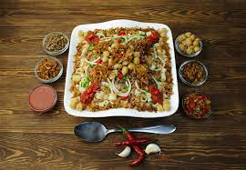

Koshary

Ingredients (4 servings)
- 1 cup dried lentils, rinsed
- 1 cup rice
- 1 cup elbow macaroni
- 1 cup cooked chickpeas
- 1 cup tomato sauce
- 1 large onion, thinly sliced
- 3 cloves garlic, minced
- 1/4 cup white vinegar
- 1/4 cup vegetable oil
- 1 teaspoon ground cumin
- 1 teaspoon ground coriander
- Salt and pepper to taste
- Chopped fresh parsley for garnish
- Chili sauce or hot sauce (optional)
Preparation
Step 1
- In separate pots, cook the lentils, rice, and macaroni according to package instructions. Drain each and set aside.
Step 2
- In a skillet, heat vegetable oil over medium heat. Add sliced onions and cook until golden brown and crispy. Remove half for garnish.
Step 3
- To the remaining onions in the skillet, add minced garlic, ground cumin, and ground coriander. Sauté for a couple of minutes until fragrant.
Step 4
- Add tomato sauce to the skillet, and simmer for 5-7 minutes. Season with salt and pepper to taste.
Step 5
- In a small bowl, mix white vinegar with the reserved crispy onions.
Step 6
- To serve, layer the cooked lentils, rice, and macaroni on a plate. Top with cooked chickpeas.
Step 7
- Pour the tomato sauce mixture over the layers.
Step 8
- Drizzle the white vinegar and crispy onion mixture over the top.
Step 9
- Garnish with chopped fresh parsley and, if desired, add chili sauce or hot sauce for extra heat.
Step 10
- Serve your flavorful Koshary and enjoy!